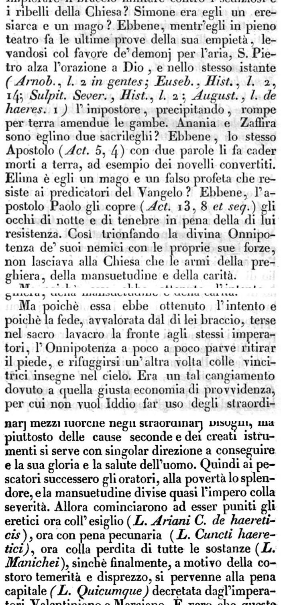

From punitive miracles to punishment (Opuscolo XVI, pp. 43–44)
Italian: Milan 1840, vol. IV, pp. 43–44, scans n44–n45. Muzzarelli’s references in brackets kept. Highlighted: what Lecky summarises.

… What need was there then to call on the military arm against the seditious and the rebels of the Church? Was Simon an heresiarch and a magician? Very well: while he is giving the last proofs of his impiety in a full theatre, rising into the air by the favour of the demons, St Peter lifts his prayer to God, and in the same instant [Arnobius, Eusebius, Sulpicius Severus, Augustine] the impostor falls and breaks both his legs on the ground. Are Ananias and Sapphira two sacrilegious persons? Very well: the same Apostle (Acts 5:4) with two words makes them fall dead on the ground, as an example to the new converts. Is Elymas a magician and a false prophet who resists the preachers of the Gospel? Very well: the apostle Paul covers his eyes (Acts 13:8 ff.) with night and darkness as the penalty of his resistance. Thus the divine Omnipotence, triumphing over its enemies by its own strength, left the Church no weapons but prayer, gentleness and charity.
But when the Church had gained its end, and the faith, strengthened by its arm, had washed the brows of the emperors themselves in the sacred font, Omnipotence little by little seemed to withdraw its foot, and to take refuge again in heaven with its victorious standards. This change was owed to that just economy of providence by which God will not use extraordinary means except in extraordinary needs, but rather uses second causes and created instruments, with singular direction, to obtain both his glory and the salvation of man. So to the fishermen succeeded the orators, to poverty splendour, and gentleness almost divided the empire with severity. Then heretics began to be punished, now by exile, now by a fine, now by the loss of all their goods, until at last, because of their rashness and contempt, it came to the penalty of death …
Original Italian
… Che bisogno vi era allora di implorare il braccio militare contro i sediziosi e i ribelli della Chiesa? Simone era egli un eresiarca e un mago? Ebbene, mentr’egli in pieno teatro fa le ultime prove della sua empietà, levandosi col favore de’ demonj per l’aria, S. Pietro alza l’orazione a Dio, e nello stesso istante (Arnob., l. 2 in gentes; Euseb., Hist., l. 2, 14; Sulpit. Sever., Hist., l. 2; August., l. de haeres. 1) l’impostore, precipitando, rompe per terra amendue le gambe. Anania e Zaffira sono eglino due sacrileghi? Ebbene, lo stesso Apostolo (Act. 5, 4) con due parole li fa cader morti a terra, ad esempio dei novelli convertiti. Elima è egli un mago e un falso profeta che resiste ai predicatori del Vangelo? Ebbene, l’apostolo Paolo gli copre (Act. 13, 8 et seq.) gli occhi di notte e di tenebre in pena della di lui resistenza. Così trionfando la divina Onnipotenza de’ suoi nemici con le proprie sue forze, non lasciava alla Chiesa che le armi della preghiera, della mansuetudine e della carità.
Ma poichè essa ebbe ottenuto l’intento e poichè la fede, avvalorata dal di lei braccio, terse nel sacro lavacro la fronte agli stessi imperatori, l’Onnipotenza a poco a poco parve ritirar il piede, e rifuggirsi un’altra volta colle vincitrici insegne nel cielo. Era un tal cangiamento dovuto a quella giusta economia di provvidenza, per cui non vuol Iddio far uso degli straordinarj mezzi fuorchè negli straordinarj bisogni, ma piuttosto delle cause seconde e dei creati istrumenti si serve con singolar direzione a conseguire e la sua gloria e la salute dell’uomo. Quindi ai pescatori successero gli oratori, alla povertà lo splendore, e la mansuetudine divise quasi l’impero colla severità. Allora cominciarono ad esser puniti gli eretici ora coll’esiglio (L. Ariani C. de haereticis), ora con pena pecunaria (L. Cuncti haeretici), ora colla perdita di tutte le sostanze (L. Manichei), sinchè finalmente, a motivo della costoro temerità e disprezzo, si pervenne alla pena capitale (L. Quicumque) …
Lecky (ch. II, note 7): “This argument, in a modified form, has been reproduced by Muzarelli … He cites the destruction of Ananias and Sapphira, and of Simon Magus. This class of miracles, he says, has ceased; and the Inquisition is, in consequence, required.” That is a fair summary of these pages, which lead into Muzzarelli’s defence of the Inquisition. Lecky’s spelling “Muzarelli” is left as printed.
Further down the rabbit hole
Sources that Lecky cites in the notes next to the ones that cite this page.
- Middleton, A Free Inquiry into the Miraculous PowersMiddleton’s exorcists and what Lecky altered in quoting him
- Brewster, Memoirs of the Life, Writings, and Discoveries of Sir Isaac NewtonLecky’s Newton quote and the missing last sentence
- Sprat, History of the Royal Society of LondonLecky adds ‘a’ to Sprat on miracles
- Guizot, Histoire de la civilisation en FranceHow many saints’ lives are there? Guizot counted April
- Locke, A Third Letter for TolerationLecky quotes Locke correctly on miracles after Constantine
- Hume, Of MiraclesThe doorkeeper of Saragossa who grew a new leg


Backlinks
Every place in Rationalism in Europe that links to this page (generated automatically when the site is built).
- Chapter II: note 7